canvas-mcp connects Claude to Canvas LMS. Deadlines, grades, readings and discussions, in plain language. It runs on your machine and your token never leaves it.

Illustrative, built from the demo data that ships with the repo.
Claude picks the right tools; you just ask.
Demo mode runs a fake Canvas with sample data, so there is nothing to sign up for.
git clone https://github.com/anaylab/canvas-mcp.git cd canvas-mcp && npm install && npm run demo
Settings → Developer → Edit Config, then restart the app. The command prints the exact block for you.
"What's due this week?" or "How am I doing in my classes?" Ready-made prompts like weekly_plan and catch_up appear in clients that support them.
Create a Canvas API token (Account → Settings → New Access Token), then point CANVAS_BASE_URL at your school. The README walks through it.
Runs on your computer over stdio. No hosted service, and your token is only sent to your own Canvas.
Every tool is marked read-only or write, so clients can ask before anything is posted or submitted.
Uploading a file does not submit the assignment unless you ask. Writes are never auto-retried.
54 tests run every tool against realistic data, across Node 18, 20 and 22.
Deploy your own private copy to a free tier. One deployment holds one person's token, so nobody has to trust anyone else with theirs.
A blueprint is included and it generates your auth token for you. Free instances sleep when idle, so the first request can take about a minute.
Deploy from the included Dockerfile and scale to zero. Needs a billing account on file for the free allowance.
Claude Desktop and claude.ai connectors need OAuth, which isn't supported yet. Use the local setup there.
Courses, assignments, rubrics, grades, calendar, pages, files, quizzes, discussions, inbox and submissions.